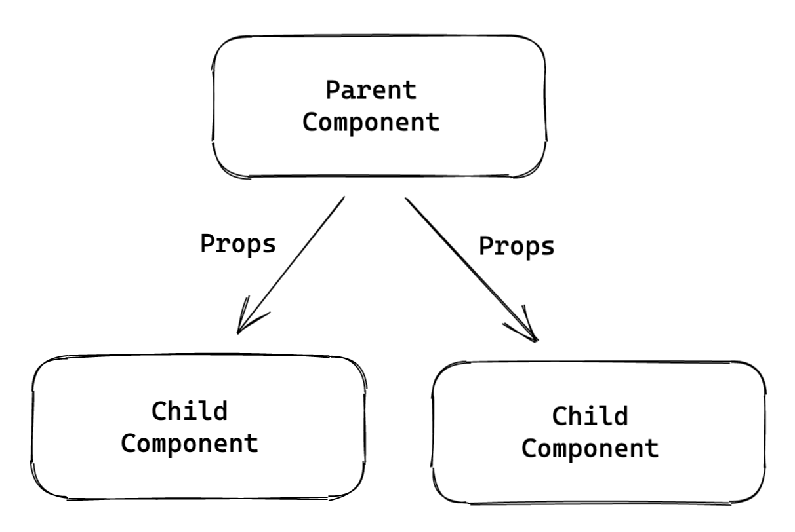
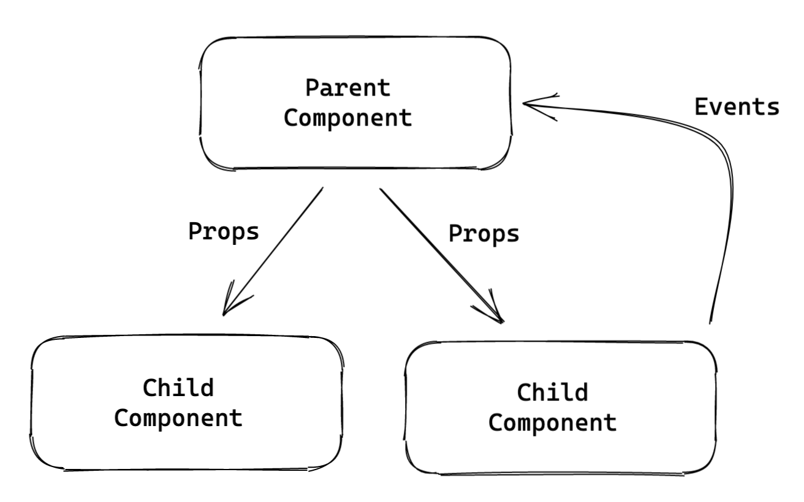
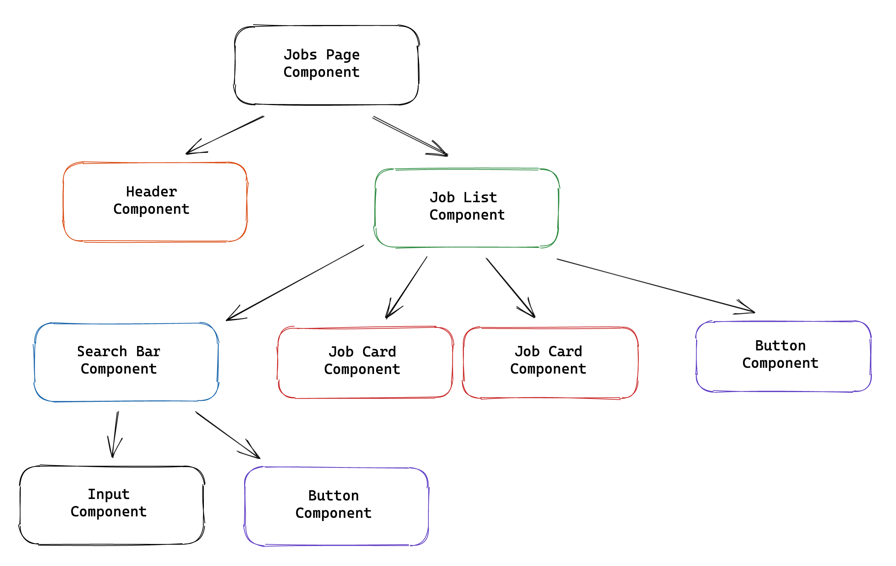
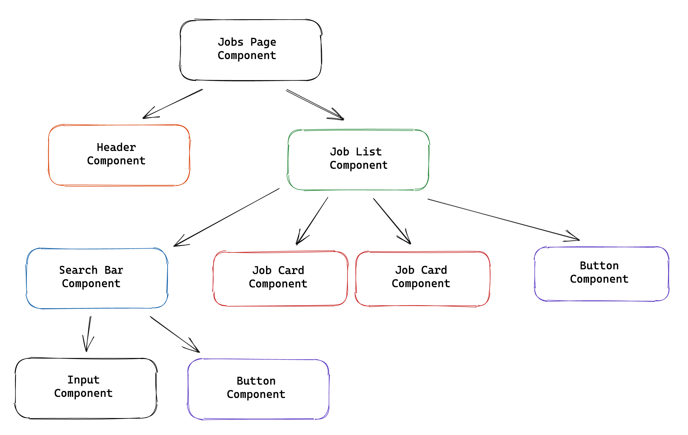
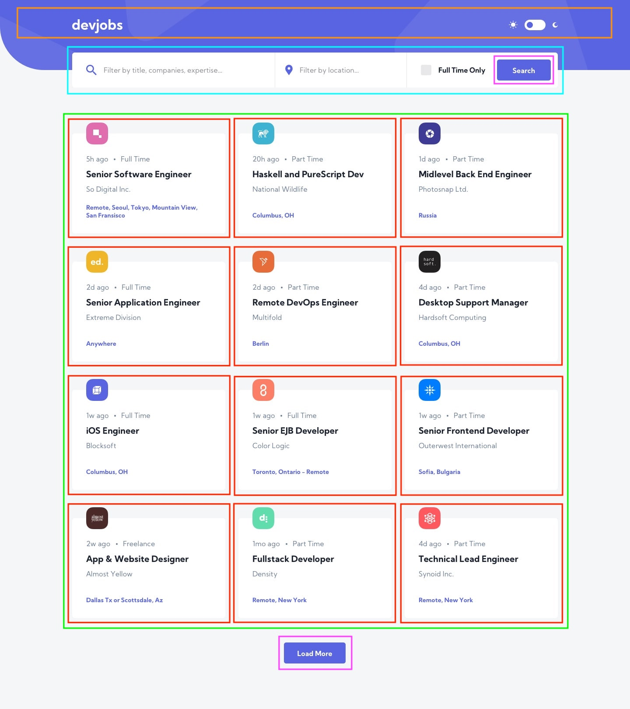
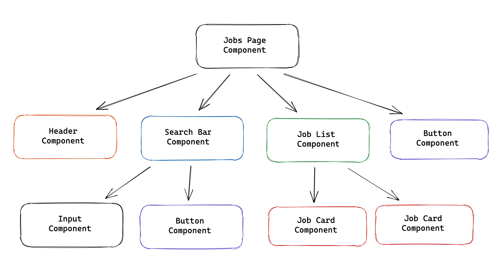

How to make React apps
Getting started with React - part 2
- Data flow
- Side Effects
- Refs
- Hooks
- Context
- Thinking in React
Data flow
Data flows down
Send events up
Side Effects
Components are pure functions that return elements
Side effects are declared inside components with
useEffect()
Effects run after a component renders
Refs
Used to interact with DOM elements
Created with useRef
Hooks
function Counter() {
const [count, setCount] = useState(0);
// ...
Rules of Hooks
- Don't invoke Hooks from loops, conditions or nested functions
- Hooks can only be invoked inside components or other hooks
function Counter({ shouldCount }) {
if (shouldCount) {
const [count, setCount] = useState(0); // ⚠️
}
// ...
function Counter({ shouldCount }) {
const [count, setCount] = useState(0); // ✅
function handleClick() {
if (shouldCount) {
setCount(count + 1);
}
}
// ...
const [count, setCount] = useState(0); // ⚠️
function Counter() {
// ...
function Counter() {
const [count, setCount] = useState(0); // ✅️
// ...
Custom Hooks
Functions whose names start with "use" and use other Hooks
Context
Context provides a way to pass data through the component tree without having to pass props down manually at every level
Usages of context
- Theme context
- Locale context
- Session context
Thinking in React
Break a design into components
 


